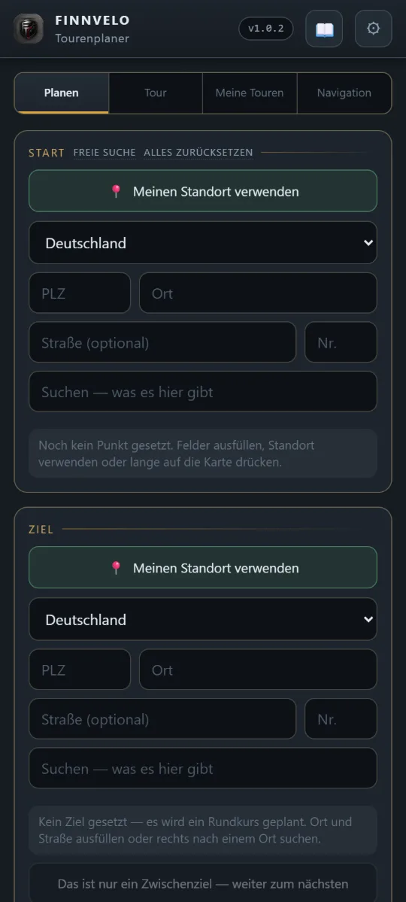
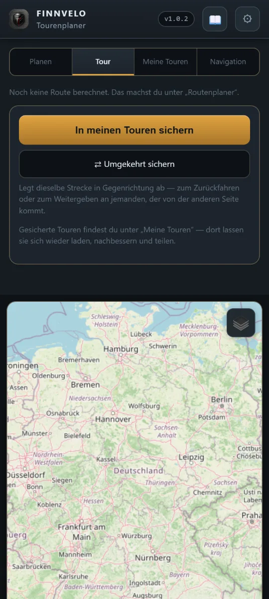
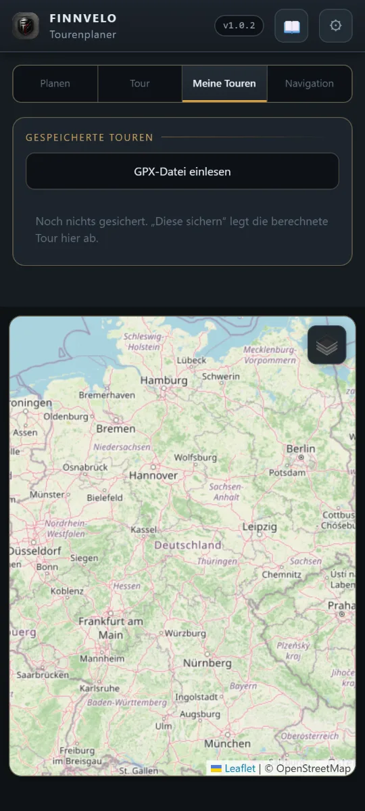
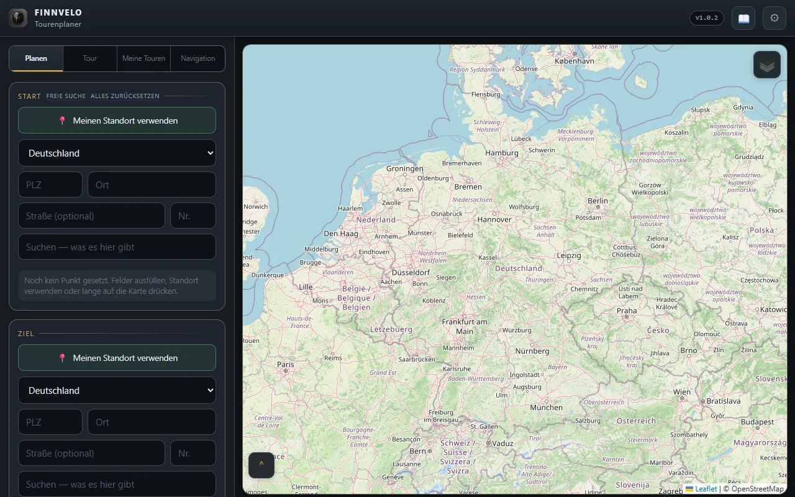
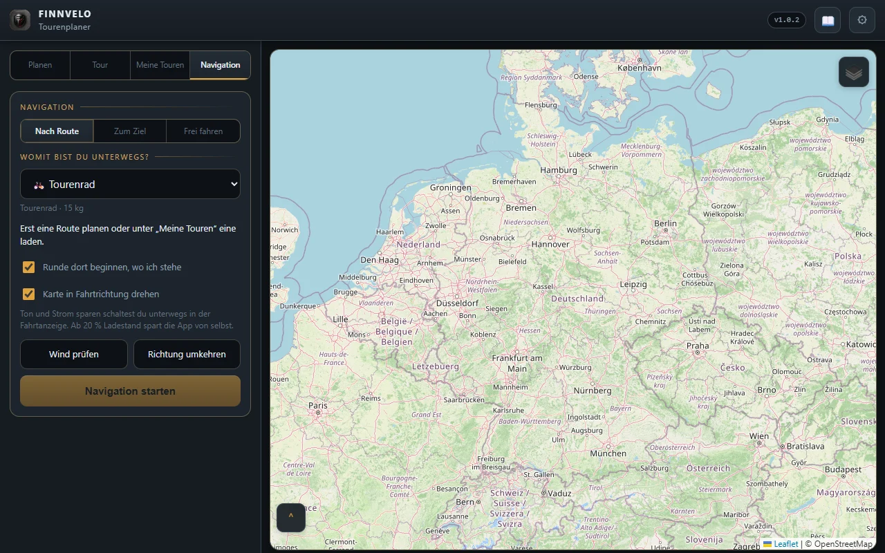
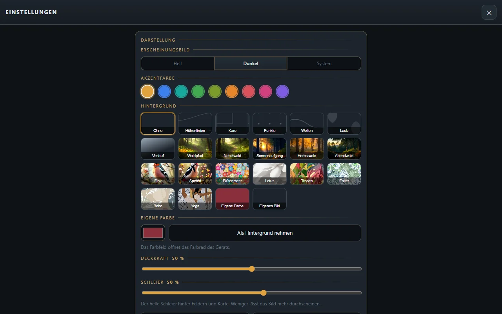

Wandern · Laufen · Radfahren · Navigation
Finnvelo Tourenplaner
In EntwicklungTouren planen, ohne lange zu suchen: Du sagst, wie weit es gehen soll und womit du unterwegs bist – den Rest schlägt der Tourenplaner vor. Unterwegs führt er mit Sprachansagen, auf Wunsch auch ohne Netz auf vorab gespeicherten Karten. Für Android und Windows.
Beschreibung
Der Tourenplaner erzeugt Wander-, Lauf- und Radtouren auf Wunsch von selbst. Du gibst an, wie du unterwegs bist, wie lang die Tour werden soll und wo sie beginnt – daraus entsteht ein Vorschlag. Wahlweise als Rundkurs, der wieder am Startpunkt endet, oder als Strecke zu einem festen Zielpunkt.
Dabei lässt sich mitgeben, woraus die Route bestehen soll: wie viel Straße es sein darf und welcher Art, wie viel über Schotter, Feld- oder Waldwege führen soll. Eigene Sperrzonen und militärische Sperrgebiete werden umfahren. So passt der Vorschlag zu dem, was du – und dein Rad oder deine Schuhe – an dem Tag vorhaben.
Jeder Vorschlag ist ein Anfang, kein Diktat: Abschnitte lassen sich von Hand umlegen, ganze Touren selbst zeichnen. Unterwegs führt die Navigation mit Sprachansagen, die gefahrene Strecke wird auf Wunsch aufgezeichnet, und fertige Touren lassen sich als GPX-Datei weitergeben – zum Beispiel an Komoot.
Automatisch vorschlagen
Fortbewegungsart und Wunschlänge angeben – die Route entsteht von selbst.
Rundkurs oder Strecke
Zurück zum Startpunkt oder von A nach B mit festem Ziel.
Wegbelag wählen
Anteil an Straße, Schotter, Feld- und Waldwegen selbst bestimmen.
Navigation mit Ansage
Unterwegs per Sprachansage geführt werden – die Stimmen arbeiten direkt auf dem Gerät.
Karten offline
Die Karte einer Tour vorab speichern und unterwegs ohne Netz nutzen.
GPX und Komoot
Touren als GPX-Datei einlesen, speichern und weitergeben – etwa an Komoot.
Von Hand nachbessern
Jeden Vorschlag anpassen oder eine Route ganz ohne Vorschlag selbst zeichnen.
Fahrten aufzeichnen
Die gefahrene Strecke mitschreiben – mit Kalorienschätzung nach der Fahrt.
Wetter zur Tour
Die Wettervorhersage direkt bei der Planung im Blick.
Handy und PC gekoppelt
Am Rechner planen, am Handy losfahren – die Touren werden verschlüsselt zwischen den Geräten ausgetauscht.
Für mehrere Sportarten
Wandern, Joggen, Radfahren, Trekking, Gravel und Mountainbike.
Oberfläche
Die App frisch installiert, noch ohne eigene Touren – darunter die PC-Fassung im gleichen Zustand.






Tutorial-Video
Ein Tutorial-Video wird hier ergänzt, sobald es bereitsteht.
Besondere Vorteile
- Kein langes Suchen – Wunschlänge nennen, Vorschlag bekommen
- Rundkurs oder Zielpunkt, je nachdem was gerade passt
- Wegbelag und Sperrzonen lassen sich vorgeben
- Navigation mit Sprachansage, auch ohne Netz
- Als Android-App und als Windows-Programm
- Alle Daten als Dateien auf dem eigenen Gerät, Sicherung als ZIP
Zielgruppe
Für alle, die gern draußen unterwegs sind und nicht jedes Mal von Neuem eine Strecke zusammensuchen wollen – ob zur Feierabendrunde mit dem Rad, zur Wanderung am Wochenende oder zur festen Laufrunde. Wer genaue Vorstellungen hat, gibt sie vor; wer einfach los will, nimmt den Vorschlag.
Download (Android-App)
Hauptdatei
Die Android-App als Installationsdatei. Da sie nicht über den Play Store verteilt wird, muss Android beim Öffnen der Datei einmalig die Installation aus unbekannter Quelle erlauben.
Download startenWeitere Versionen und Patches
Platzhalter für spätere Updates, Patchdateien und ältere Versionen.
Download (PC-Version)
Programm herunterladen
Installationsprogramm für Windows. Die PC-Fassung bietet dieselbe Planung wie die App; Touren lassen sich zwischen Rechner und Handy austauschen.
PC-Version herunterladenHinweis
Windows meldet bei unbekannten Programmen einen Warnhinweis. Über „Weitere Informationen“ → „Trotzdem ausführen“ lässt sich der Start fortsetzen.